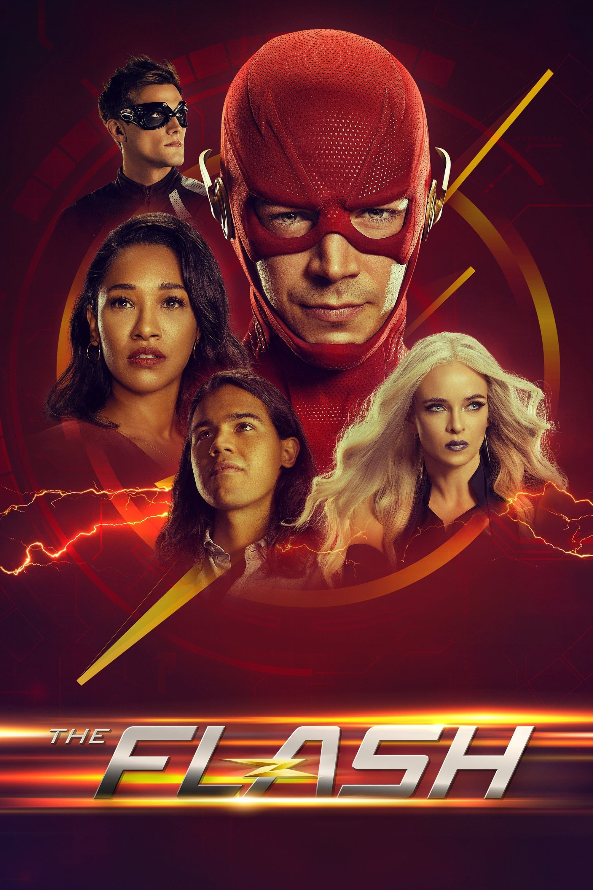

Flash არის ამერიკული სუპერგმირული სატელევიზიო სერიალი, შექმნილი გრეგ ბერლანტის, ენდრიუ კრეისბერგის და ჯეფ ჯონსის მიერ, რომელიც გადის The CW-ზე. იგი ეფუძნება ბარი ალენის განსახიერებას DC Comics-ის პერსონაჟის Flash-ის, კოსტუმირებული სუპერგმირის კრიმინალ-მებრძოლის, ზეადამიანური სიჩქარით გადაადგილების ძალით. ეს არის Arrow-ის სპინ-ოფი, რომელიც არსებობს იმავე გამოგონილ სამყაროში, რომელიც ცნობილია როგორც Arrowverse. სერიალის პრემიერა შედგა შეერთებულ შტატებში CW-ზე 2014 წლის 7 ოქტომბერს და გაგრძელდა ცხრა სეზონი 2023 წლის 24 მაისამდე. სერიალი მიჰყვება ბარი ალენს, რომელსაც ასახავს გრანტ გასტინი, დანაშაულის ადგილის გამომძიებელი, რომელიც იძენს ზეადამიანურ სიჩქარეს. ის იყენებს კრიმინალებთან საბრძოლველად სხვებთან ერთად, რომლებმაც ასევე მოიპოვეს ზეადამიანური შესაძლებლობები. თავდაპირველად გათვალისწინებული იყო, როგორც უკანა კარის მფრინავი, პოზიტიურმა მიღებამ, რომელიც გუსტინმა მიიღო ორი გამოსვლისას, როგორც Barry on Arrow-ზე, აიძულა აღმასრულებლებმა აირჩიეს სრული პილოტის შექმნა უფრო დიდი ბიუჯეტის გამოსაყენებლად და ბარის სამყაროს უფრო დეტალურად გააზრებაში. სერიალი ძირითადად გადაღებულია ვანკუვერში, ბრიტანეთის კოლუმბიაში, კანადა. Flash-ის პრემიერა 2014 წლის 7 ოქტომბერს გახდა მეორე ყველაზე ყურებადი პილოტი CW-ის ისტორიაში, 2009 წლის The Vampire Diaries-ის შემდეგ. ის კარგად იქნა მიღებული კრიტიკოსებისა და მაყურებლის მიერ და მოიპოვა ხალხის არჩევანის ჯილდო "საყვარელი ახალი ტელევიზიისთვის". დრამა" 2014 წელს. სერიალმა Arrow-თან ერთად გამოავლინა პერსონაჟები საკუთარ შოუში Legends of Tomorrow, რომლის პრემიერა შედგა 2016 წლის 21 იანვარს.
პირველი სეზონი მიჰყვება ბარი ალენს, დანაშაულის ადგილის გამომძიებელს, რომელიც ზეადამიანურ სიჩქარეს იძენს S.T.A.R-ის აფეთქების შედეგად. Labs-ის ნაწილაკების ამაჩქარებელი და ხდება კოსტუმირებული სუპერგმირი Flash. ის იყენებს თავის ახალ ძალებს კრიმინალებთან საბრძოლველად სხვა მეტაადამიანებთან ერთად, რომლებმაც ასევე მოიპოვეს ზეადამიანური შესაძლებლობები ცენტრალურ ქალაქში. საბოლოოდ, ბარი აღმოაჩენს, რომ მისი მენტორი ჰარისონ უელსი არის ეობარდ თაუნი - რევერსი-ფლეში - მისი მთავარი მტერი მომავლიდან, რომელიც დროში იმოგზაურა, რათა მოეკლა დედამისი, ნორა ალენი, როდესაც ის ბავშვი იყო. თაუნი საბოლოოდ წაიშლება არსებობიდან, როდესაც მისი წინაპარი ედი თავს სწირავს, რის შედეგადაც წარმოიქმნება სინგულარობა ამ პროცესში. მეორე სეზონში სინგულარობა მოაქვს სპიდსტერი Zoom-ს დედამიწა-2-ის პარალელური სამყაროდან, რომელიც ცდილობს აღმოფხვრას ყველა სხვა სპიდსტერი მრავალ სამყაროში, სადაც ბარი ხვდება მამამისს ჰენრი ალენის Earth-3 კოლეგას ჯეი გარიკს. მას შემდეგ, რაც Zoom მოკლავს ბარის მამას, ბარი ამარცხებს ზუმს და მოგზაურობს დროში დედის სიცოცხლის გადასარჩენად. მესამე სეზონში ბარი ქმნის ალტერნატიულ ვადებს „Flashpoint“ მისი წარსულის შეცვლის გადაწყვეტილების შემდეგ. მას შეუძლია ნაწილობრივ აღადგინოს ქრონომეტრაჟი, მაგრამ იწვევს სავიტარის გაჩენას, ღმერთის მსგავსი ჩქაროსნის, ბარის მიმართ ზიზღით. როდესაც ბარი შემთხვევით მიემგზავრება მომავალში და ხედავს, რომ ირის უესტი მოკლულია სავიტარის მიერ, ის სასოწარკვეთილი ხდება შეცვალოს მომავალი, რათა ეს არ მოხდეს. ირისის გადარჩენისა და სავიტარის დამარცხების შემდეგ, ბარი ადგილს იკავებს Speed Force-ში, რათა მოინანიოს Flashpoint-ის შექმნის გამო. მეოთხე სეზონში გუნდი წარმატებით აბრუნებს ბარის Speed Force-დან, მაგრამ ამ პროცესში ათავისუფლებს ბნელ მატერიას, რომელიც ქალაქის ავტობუსში მყოფ ათეულ ადამიანს მეტაადამიანებად აქცევს, რომლებსაც კლიფორდ დევოე ამუშავებს, ყველაზე სწრაფი გონების მქონე მოწინააღმდეგე. DeVoe-ს დამარცხების შემდეგ გუნდს უახლოვდება ბარის და აირისის ქალიშვილი მომავალი ნორა უესტ-ალენიდან. მეხუთე სეზონის განმავლობაში გუნდი აღმოაჩენს, რომ ნორას ყოფნამ შეცვალა ვადები და გააჩინა ციკადა, სერიული მკვლელი, რომელიც მიდრეკილია მეტაადამიანების მოკვლაზე, ისევე როგორც მოაზროვნის შეთქმულების ჩაშლის შემდეგ, რაც იწვევს ჩვეულებრივ ნივთებს ბნელი მატერიით გაჟღენთილი, რაც მათ მეტაად აქცევს. -ტექნიკა. მათ ასევე საბოლოოდ შეიტყვეს მისი ერთგულების შესახებ დაპატიმრებულ ეობარდთან, რომელიც ორკესტრირებდა ნორას ჩამოსვლას და ადრე ავარჯიშებდა მას, როცა საქმე Godspeed-თან ბრძოლას ეხებოდა. ბარი და ნორა ახერხებენ გაქცეული ეობარდის დამორჩილებას, მაგრამ იძულებულნი არიან გაუშვან იგი და ნორა წაშლილია დროის ხაზიდან. მეექვსე სეზონში ბარი და აირისი იგებენ, რომ კრიზისი, რომელშიც ბარი ქრება, გადავიდა 2019 წლის დეკემბრამდე და რომ მილიარდების დაზოგვის მიზნით, Flash უნდა მოკვდეს. ამასობაში, რამსი როსო აღმოაჩენს გზას, რათა განკურნოს ადამიანები ბნელი მატერიის მეშვეობით, მხოლოდ იმისთვის, რომ თავად იქცეს მეტაადამიანად, რომელსაც ძალადობრივი სისხლისმსმელი აქვს. როსოს დამარცხების, ბარის გადარჩენილი კრიზისის და მულტი სამყაროს განადგურებისა და აღორძინების შემდეგ, გუნდი აგრძელებს ნავიგაციას პოსტკრიზისულ სამყაროში, ხოლო საიდუმლო ორგანიზაცია შავი ხვრელი და კვანტური ინჟინერი ევა მაკკულოხი, რომელიც სარკის განზომილებაშია ჩაფლული, წინ მიიწევს თავისი იდუმალი გეგმებით. . ევა იჭერს აირისს, კამილას და კაპიტან სინგს და აპატიმრებს მათ Mirror Dimension-ში, ხოლო მათი სარკის დუბლიკატები ხელს უშლის Team Flash-ს. მეშვიდე სეზონში Team Flash ამარცხებს ევას და ქმნის ახალ სიჩქარის ძალას, ხოლო აირისი, კამილა და სინგჰი გაურბიან სარკის განზომილებას. როგორც ევას თავდასხმების გვერდითი ეფექტი, კეიტლინი და ფროსტი იყოფა სხვადასხვა სხეულებად. მოგვიანებით, Team Flash ებრძვის ძლიერი ძალის, ბრძენი ძალის და Still Force-ს დაბადებას. ამის შემდეგ, გუნდი Flash ჩაერევა Godspeed War-ში, რომელშიც ბარი გაერთიანდება თავის მომავალ ქალიშვილ ნორასთან და ხვდება თავის მომავალ ვაჟს ბარტ ალენს. ბარი მოკლედ აერთიანებს რეკონსტიტუციურ თაუნს, რათა დაამარცხოს გოდსპიდი, შემდეგ კი თაუნი გარბის და პირობა დადო, რომ ბარისზე სწრაფი გახდება. მერვე სეზონი ხუთნაწილიანი ღონისძიებით „არმაგედონით“ იხსნება. თაუნი იწვევს ბარის დესპეროს სამიზნეს, რომელიც ირწმუნება, რომ ბარი გაანადგურებს დედამიწას 2031 წელს. მოგვიანებით, ბარი შედის თაუნის "Reverse-Flashpoint" ვადებში, სადაც ის იყო Flash და ბარი იყო Reverse-Flash. დემიენ დარკის დახმარებით, ბარი აღადგენს თავდაპირველ ვადებს, ხელს უშლის ჯოს სიკვდილს და ათავისუფლებს თაუნს მისი წაშლისგან მისი სიჩქარის მოხსნით. მოგვიანებით, Team Flash ებრძვის Deathstorm-ს, რომლის დამარცხებაც ფროსტის სიცოცხლის ფასად დაუჯდა და გაანადგურა მისი მეგობარი ბიჭი ჩილბლეინი. ბარი ასევე ხვდება მეენა დავანს, რომელმაც სუპერ სიჩქარე მოიპოვა თაუნის გაცოცხლებული დროის ნარჩენების დახმარებით. ისინი ებრძვიან ახლად დაბადებულ ნეგატიურ კოლეგებს სიძლიერის, ბრძენისა და უძრავი ძალის, რომლებიც ირისს იყენებენ თაუნის მისი დროის ნარჩენების სხეულში გასაცოცხლებლად, მაგრამ შემდეგ დამარცხებულნი არიან და თაუნი ამოღებულია ვადებიდან. მეცხრე და ბოლო სეზონი იხსნება Team Flash-ით, რომელიც აერთიანებს ძალებს ყოფილ მტრებთან, რათა დაამარცხოს წითელი სიკვდილი, რომელიც მოგვიანებით გაირკვა, რომ არის რაიან უაილდერი ალტერნატიული დედამიწიდან. მოგვიანებით, როსო ბრუნდება, რათა დააინფიციროს ახლად ხელახლა შექმნილი

2013 წლის 30 ივლისს გამოცხადდა, რომ Arrow-ის თანაშემქმნელები გრეგ ბერლანტი და ენდრიუ კრეისბერგი, Arrow-ის პილოტი რეჟისორი დევიდ ნატერი და DC Comics CCO ჯეფ ჯონსი შეიმუშავებდნენ სატელევიზიო სერიას Flash-ზე დაფუძნებული The CW-სთვის და მასში დეტალურად იქნება აღწერილი ბარი. ალენის წარმოშობა. კრეისბერგმა გამოაცხადა განცხადების შემდეგ, რომ ალენი პირველად გამოჩნდებოდა Arrow-ის განმეორებად პერსონაჟად მეორე სეზონის სამ ეპიზოდში - ყველა დაწერილი იყო ბერლანტის, კრეისბერგის და ჯონსის მიერ - ხოლო ბოლო ეპიზოდი შეასრულებდა ახალი შოუს უკანა კარის პილოტს. კრეისბერგმა დასძინა, რომ ალენი იქნება სასამართლო მეცნიერი და მისი ზესახელმწიფოების დანერგვა, ისევე როგორც ამაზე რეაგირება, იქნება ძალიან ადამიანური და დასაბუთებული. ჯონსმა განაცხადა, რომ შოუში Flash-ის პერსონაჟი დაემსგავსებოდა მის კომიქსების კოლეგას, მისი საფირმო ნიშნის წითელი კოსტუმებით და არ იქნებოდა ცუდი იმიტაცია. კრეისბერგმა დააკონკრეტა: „არანაირი სვიატი ან უცნაური კოდური სახელები; ის იქნება The Flash“. ფლეშის ელვისებური სიჩქარის გამოსახვის საუკეთესო ხერხის შესწავლისას, ჯონსმა განაცხადა, რომ ეს არ იქნებოდა მხოლოდ სტანდარტული „დაბინდვა“. საბოლოოდ, ბარი ორჯერ გამოჩნდა Arrow-ის მეორე სეზონში, სადაც დაგეგმილი backdoor პილოტი გააუქმა ტრადიციული პილოტის სასარგებლოდ The CW-ის აღმასრულებლების მიერ, რომლებიც შთაბეჭდილება მოახდინეს Arrow-ზე ბარის პირველი ორი ეპიზოდის ადრეულ ჭრილში. ეს საშუალებას აძლევდა შემოქმედებით გუნდს უფრო დიდი ბიუჯეტით მოეხდინა ბარის ისტორია და მისი სამყარო, განსხვავებით უკანა კარის მფრინავის შეზღუდვისგან, რომ შეეტანა პერსონაჟები მშობელი შოუდან. პილოტი ოფიციალურად შეუკვეთეს 2014 წლის 29 იანვარს და დაწერილი იყო ბერლანტის, კრეისბერგის და ჯონსის მიერ და რეჟისორი ნუტერი. 2014 წლის 8 მაისს, The Flash ოფიციალურად იქნა აღებული, როგორც სერიალი, თავდაპირველი შეკვეთით 13 ეპიზოდი. კიდევ სამი სცენარი შეუკვეთეს 2014 წლის სექტემბერში აღმასრულებლების მიერ ახლად დასრულებულ ეპიზოდებზე დადებითი პასუხის შემდეგ, ხოლო უკანა ათი შეუკვეთეს შემდეგ თვეში სრული 23 ეპიზოდის სეზონისთვის. სერიალის მეორე სეზონის წარმოების დაწყებით, ისრისა და მახინჯი ბეტის ყოფილი მწერალი გაბრიელ სტენტონი დაწინაურდა აღმასრულებელ პროდიუსერად და შოურუნერად; მას შემდეგ, რაც მსახურობდა პროდიუსერად და მწერლად პირველი სეზონის ფინალზე "Fast Enough". თუმცა, მოგვიანებით გავრცელდა ინფორმაცია, რომ კრეისბერგი დაუზუსტებელ დროს უბრუნდებოდა ერთადერთი შოურუნერის მოვალეობებს. მოგვიანებით დადასტურდა, რომ ეს დრო იყო 2016 წლის დასაწყისში, "პოტენციური ენერგია", როდესაც სტენტონს აღარ მიაჩნდა მონაწილეობა შოუში. 2017 წლის მაისში გავრცელდა ინფორმაცია, რომ აარონ ჰელბინგი სერიალს დატოვებდა. ჰელბინგი პირველი სეზონიდან მწერლად მუშაობდა და მეორე სეზონიდან, ძმასთან, ტოდთან და კრეისბერგთან ერთად, თანა-შოურანერი იყო. 2019 წელს, ტოდი დატოვა შოუს წამყვანი, ხოლო ერიკ უოლესი, რომელიც მეოთხე სეზონის თანა-აღმასრულებელი პროდიუსერი იყო, დაწინაურდა ერთადერთ შოურუნერად, რომელიც ძალაშია მეექვსე სეზონიდან. 2018 წლის 2 აპრილს CW-მ განაახლა სერია მეხუთე სეზონისთვის, რომლის პრემიერა შედგა 2018 წლის 9 ოქტომბერს. 2019 წლის 31 იანვარს CW-მ განაახლა სერია მეექვსე სეზონისთვის, რომლის პრემიერა შედგა 2019 წლის 8 ოქტომბერს. 2020 წლის 7 იანვარს სერიალი განახლდა მეშვიდე სეზონით, რომლის პრემიერა შედგა 2021 წლის 2 მარტს. 2020 წლის აპრილში, გასტინმა, რომელსაც კონტრაქტი ჰქონდა შვიდი სეზონით, თქვა, რომ იყო დისკუსიები სერიის მეცხრე სეზონის განახლების შესახებ, მაგრამ ისინი შეჩერდა COVID-19 პანდემიის გამო. 2021 წლის 3 თებერვალს სერიალი განახლდა მერვე სეზონისთვის, რომლის პრემიერა შედგა 2021 წლის 16 ნოემბერს. 2022 წლის იანვრის ბოლოს, გასტინმა გააგრძელა კონტრაქტი მეცხრე სეზონით. 2022 წლის 22 მარტს CW-მ განაახლა სერია მეცხრე სეზონისთვის. 2022 წლის 1 აგვისტოს გამოცხადდა, რომ სერიალი დასრულდება მისი მომავალი მეცხრე სეზონით და რომ სეზონი მიიღებდა 13 ეპიზოდის შეკვეთას. სეზონის პრემიერა შედგა 2023 წლის 8 თებერვალს, ფინალი ეთერში იმავე წლის 24 მაისს.
